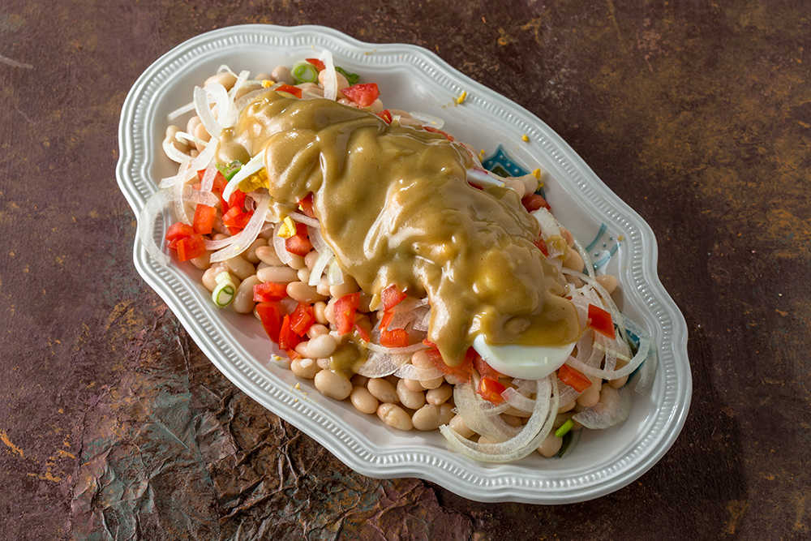
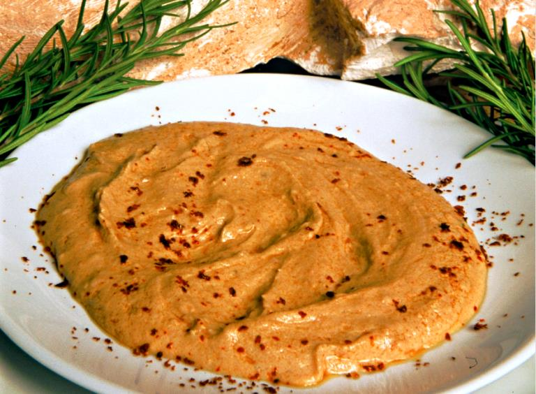

Gastronomy
Main Dishes

- Tahini Piyaz: Unlike standard piyaz, it contains a thick sauce made from a mixture of tahini, garlic, lemon juice, and vinegar. Traditional preparation uses small-grained Çandır beans. Topped with boiled eggs, tomatoes, onions, and parsley. Due to the richness of its sauce, it is considered a main dish rather than a meze. It holds a geographical indication certificate.
- Şiş Köfte (Skewered Meatballs): Prepared by kneading ground meat (usually a mix of beef and lamb), salt, and minimal spices (black pepper or cumin). The mixture does not contain onion, parsley, or breadcrumbs. Threaded onto thin skewers and grilled over charcoal. Traditionally consumed together with tahini piyaz.
Snacks and Desserts

- Hibeş: A cold meze obtained by whisking tahini, crushed garlic, freshly squeezed lemon juice, heavy cumin, and ground red pepper until homogenized. No heat treatment is applied. Used as a sauce alongside meat dishes, a spreadable snack, or as salad dressing.
- Serpme Börek: Produced by the technique of tossing (serpme) the dough in the air without using a rolling pin until it becomes paper-thin. Filled with cheese or minced meat. Due to the thinness of the dough and production technique, it contains a high amount of oil. Cooked quickly at high temperatures.
- Burnt Ice Cream (Yanıksı Dondurma): Made using 100% goat milk and pure salep. The key difference in the production process is that the bottom of the copper cauldrons is intentionally scorched during the milk boiling stage, and this smoky, burnt aroma is infused throughout the milk. It is a specialty of Antalya's Korkuteli district.